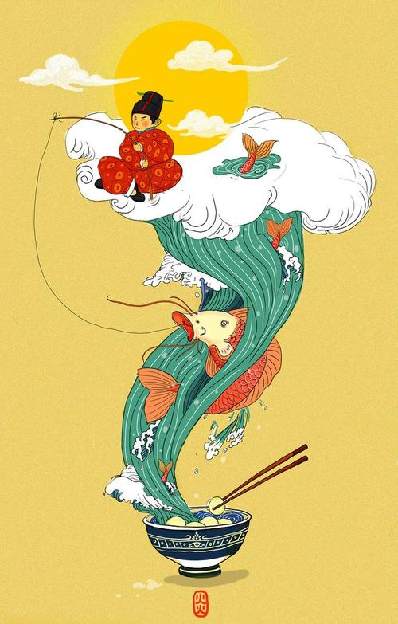

Fish is a must for the Chinese New Year. Why does fish symbolize surplus and wealth? In Chinese, fish (鱼—yú) has the same pronunciation as 余, which means “surplus” or “extra.” The typical blessing is 年年有余 (Nián nián yǒu yú), wishing you to have a surplus (or fish) of food and money every year.Half of the fish is eaten for dinner, and the second half the next day. This is to prolong the surplus and make the future prosperous as well. A whole fish also represents a harmonious and whole family. Some would cook a bigheaded carp. But only the middle would be eaten, while the head and tail are left intact. The Chinese phrase is 有头有尾 (yǒu tóu yǒu wěi)—to have both a head and tail. This is a reminder to finish everything you start and wish for positive results. During dinner, the fish head should be placed facing the guests.
Different kinds of fish represent different meanings:
Chinese mud carp: Its Chinese name ‘li’ means gifts, so eating it can bring people good luck and blessing.
Crucian carp: Its Chinese name ‘ji’ means very good fortune.
Catfish: The Chinese name is ‘nianyu’, literally meaning 'year surplus' and standing for a rich life.
Some rules of eating fish in Chinese New Year:
Don’t turn over the fish after you have finished eating one side. In Chinese culture, it means unlucky.
To show respect, the head of fish needs to be placed toward elders or distinguished guests.
In southern China, some people just eat the middle part of the fish on the New Year Eve, leaving the head and tail to the next day to symbolize completeness.